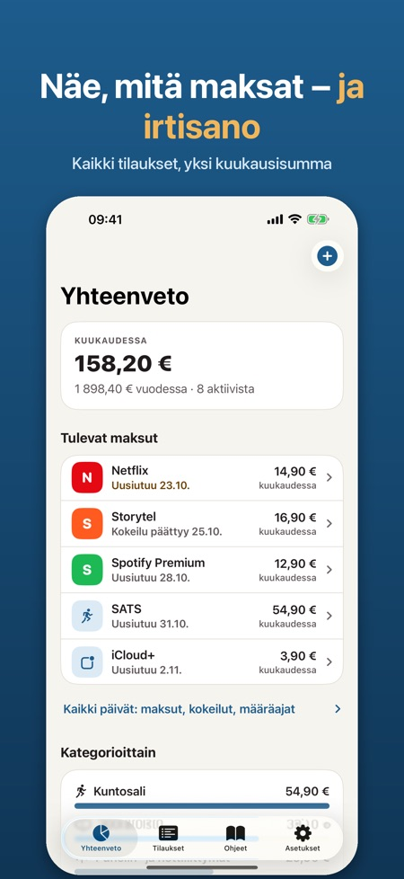
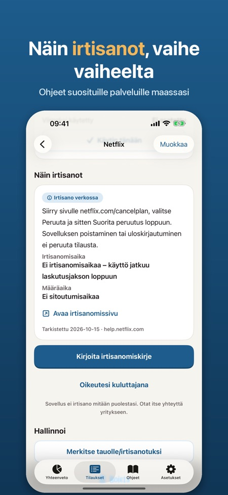
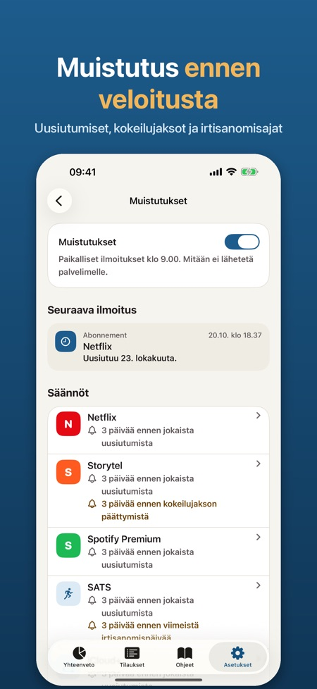

Muistutus ennen uusiutumista. Näet, mitä maksat joka kuukausi, saat muistutuksen ennen uusiutumista ja irtisanot valmiilla kirjeellä. Ei pankkitunnuksia – kaikki pysyy iPhonessasi.



Näet kaikki tilaukset, joista maksat, saat muistutuksen ennen kuin ne uusiutuvat ja näet, miten irtisanot ne.
TEHTY SUOMEEN JA POHJOISMAIHIN
Valitse suosituista palveluista Suomessa, Ruotsissa, Norjassa ja Tanskassa: suoratoisto, musiikki, puhelinliittymät, kuntosalit, äänikirjat ja paljon muuta. Laskutusjakso ja irtisanomisohje täytetään valmiiksi – tai lisää omasi.
NÄET, MITÄ MAKSAT
• Summa kuukaudessa ja vuodessa
• Kulut kategorioittain ja kallein tilauksesi
• Merkitse, milloin viimeksi käytit palvelua, ja löydä ne, joista maksat käyttämättä
TULOSSA
• Tulevat maksut ja määräpäivät 30 tai 90 päivää eteenpäin
• Tilastot kuukausittain tai vuosittain, kategorioittain
• Kaikki irtisanomisohjeet omalla välilehdellään ja muistutukset yhdessä paikassa
MUISTUTUKSET AJOISSA
• Ennen jokaista uusiutumista, jopa 30 päivää etukäteen
• Ennen kuin kokeilujakso muuttuu maksulliseksi
• Ennen viimeistä irtisanomispäivää ja kun määräaika päättyy
IRTISANO VAIVATTA
• Irtisanomisohjeet palveluittain ja maittain: suora linkki, irtisanomisaika, määräaika ja päivä, jolloin ne viimeksi tarkistettiin
• Selkeä irtisanomiskirje suomeksi, ruotsiksi, norjaksi tai tanskaksi: nimi, asiakasnumero ja pyyntö kirjallisesta vahvistuksesta. Jaa Mailin tai Viestien kautta, kopioi tai tallenna PDF:nä – lähetät sen itse
• Lyhyet tekstit oikeuksistasi kuluttajana
WIDGET KOTI-VALIKKOON JA LUKITUSNÄYTÖLLE
Kuukauden summa ja seuraava maksu yhdellä silmäyksellä.
YKSITYINEN
Ei tiliä, ei pankkitunnuksia, ei mainoksia. Kaikki pysyy iPhonessasi. Halutessasi Face ID -lukitus ja CSV-vienti.
PRO
Ilman Pro-versiota voit seurata enintään 5 tilausta muistutuksineen ja irtisanomisohjeineen. Pro tuo rajattoman määrän tilauksia, irtisanomiskirjeet, kulut kategorioittain, widgetin ja CSV-viennin. Valitse vuositilaus tai kertaosto. Vuositilaus alkaa 7 päivän kokeilujaksolla.
Sovellus on riippumaton eikä liity mihinkään luettelon palveluista. Palvelujen nimet kuuluvat omistajilleen. Irtisanomisohjeet ja oikeuksia koskevat tekstit ovat tietoa, eivät oikeudellista neuvontaa. Sovellus ei koskaan irtisano mitään puolestasi.